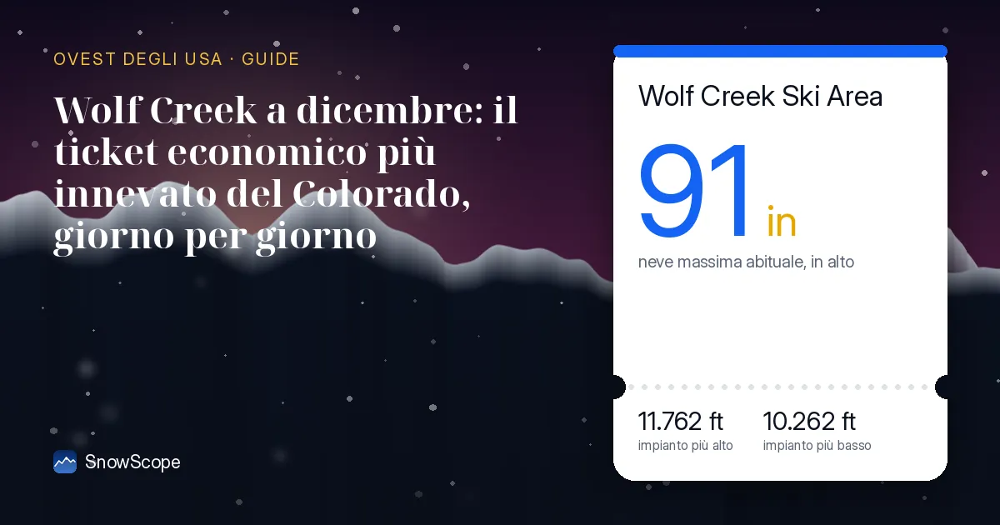

Wolf Creek a dicembre: il ticket economico più innevato del Colorado, giorno per giorno
Wolf Creek Ski Area sorge in alto sulla Cresta Continentale tra Pagosa Springs e South Fork. Applica un prezzo fisso tutto l'anno, pubblica le tariffe in anticipo e offre la neve più profonda a metà dicembre tra tre comprensori del Colorado da noi verificati. Ecco com'è un dicembre tipico a ogni quota e quando prenotare per evitare i prezzi di punta.
Le previsioni neve in tempo reale per Wolf Creek Ski Area nell'app SnowScopeAltezza neve, allerte powder e mappa 3D, gratis.
Tre quote, tre storie di neve
Wolf Creek si estende da 3.128 m alla base a 3.585 m in vetta, con 11 impianti e circa 50 km di piste. La profondità della neve varia con la quota. In una giornata tipica del 15 dicembre, la base ha 74 cm, la media quota a 3.356 m ne tiene 87 cm e la vetta raggiunge 92 cm. Entro il 31 dicembre, la media quota sale a 118 cm e la vetta a 127 cm.
L'affidabilità è alta ma non perfetta. Al 15 dicembre, il 72 % degli inverni ha 50 cm o più a media quota. Le settimane di buona neve, che SnowScope definisce come una media settimanale di 50 cm o superiore, si verificano nel 59 % degli inverni nella prima settimana di dicembre ma nel 78 % degli inverni nella settimana di Natale. Quando i temporali evitano le montagne di San Juan, tutto il passo ne risente: un dicembre magro, uno su dieci, può avere solo 12 cm il 15.

Quando visitare e quanto costa
I prezzi dei biglietti di Wolf Creek per il 2026-27 sono fissi e stampati: 96 $ nei giorni normali, 110 $ nei giorni di punta. A dicembre, i giorni di punta vanno dal 20 al 23 dicembre e dal 26 al 31 dicembre. Questo significa che risparmi 14 $ per biglietto se scii prima del 20 dicembre, oppure il 24 e il 25 dicembre.
I pass plurigiornalieri offrono un miglior rapporto qualità-prezzo per soggiorni più lunghi. Un pass di 2 giorni costa 192 $ nei giorni normali o 220 $ nei giorni di punta. Un pass di 3 giorni è 285 $ o 327 $. Il dicembre più conveniente è quindi qualsiasi data prima del 20, più i due giorni di Natale stesso.

Il confronto: Loveland e Ski Cooper
Loveland, sulla I-70 a ovest di Denver, applica prezzi dei biglietti per inizio stagione a 60 $ online fino al 13 dicembre, poi 159 $ alla cassa dal 14 dicembre in poi. La sua media quota aveva 74 cm in una giornata tipica del 15 dicembre, con il 67 % degli inverni sopra i 50 cm. Ski Cooper vicino a Leadville è l'affare tra feriale a 49 $, che sale a 99 $ nei fine settimana e giorni festivi, e aveva 66 cm a media quota in una giornata tipica del 15 dicembre, con il 70 % degli inverni sopra i 50 cm.
Wolf Creek è la più nevosa delle tre sui nostri numeri a media quota ed è l'unica con prezzo fisso tutto l'anno. Sorge più in alto e più lontano da Denver: paghi di più in tempo di guida, ma poca folla e neve più profonda sono il compromesso.
Dicembre era più caldo negli inverni passati
L'inizio di dicembre era una volta più profondo. Nei primi 15 inverni del nostro record, la media quota aveva 140 cm in una giornata tipica del 15 dicembre. Negli ultimi 15 inverni, è sceso a 60 cm, e la quota di inverni sopra i 50 cm è crollata dall'87 % al 67 %. L'inverno scorso era molto magro in quella data: solo 23 cm.
La tendenza è chiara ma non assoluta. La metà di dicembre e il resto del mese si mantengono bene. Entro il 25 dicembre, la profondità tipica è 107 cm a media quota, e entro il 31 dicembre raggiunge 118 cm. La settimana migliore in un inverno tipico è l'ultima settimana dell'anno, con profondità intorno a 118-127 cm a media e alta quota.
Cosa sapere prima di partire
Wolf Creek Pass (US-160) è alto, ripido e senza pietà. La guida invernale richiede catene o trazione integrale e consapevolezza meteorologica. Controlla il sito del Dipartimento dei Trasporti del Colorado prima di partire. Il passo è chiuso occasionalmente in caso di forti nevicate e le condizioni possono cambiare rapidamente.
Non c'è alloggio in montagna. I paesi più vicini sono Pagosa Springs (40 km a sud) e South Fork (24 km a nord). La maggior parte dei visitatori sale per il giorno. A oltre 3.000 m di quota, vai con calma il primo giorno e bevi acqua per adattarti all'altitudine. La neve di inizio stagione può essere sottile; le rocce possono essere vicine sotto coperture poco profonde.
Consigli per sciatori
- Scii prima del 20 dicembre per bloccare il prezzo normale di 96 $ invece di 110 $.
- Prenota un pass di 2 o 3 giorni se puoi; il costo per giorno scende a 96 $ o 95 $ al giorno nei giorni normali, uguagliando o battendo i prezzi dei singoli biglietti.
- Pianifica per la media quota a 3.356 m o superiore; la base a 3.128 m può essere sottile all'inizio della stagione.
- Porta catene o usa la trazione integrale; controlla le condizioni di CDOT e lo stato della strada prima di guidare Wolf Creek Pass.
- Prendi il primo giorno con calma a questa quota; bevi acqua ed evita lo sforzo eccessivo per adattarti a oltre 3.000 m.
Su questi numeri
Le altezze neve delle località sono la neve più alta sui pendii superiori alla data indicata; sono stime per un'area, non una misura in un punto. Le previsioni possono cambiare. Leggi sempre il bollettino valanghe ufficiale prima del fuoripista.
Bollettini valanghe ufficiali: Colorado Avalanche Information Center
Cita questo articolo
Per ricerca, didattica o stampa: numeri e grafici sono liberamente riutilizzabili con licenza CC BY 4.0 citando così.
SnowScope (2026), Wolf Creek a dicembre: il ticket economico più innevato del Colorado, giorno per giorno, https://snowscope.app/blog/it/2026/11/wolf-creek-colorado-december-skiing-value.html, consultato il 2026-11-14
SnowScope (Atlas Labs). (2026, November 14). Wolf Creek a dicembre: il ticket economico più innevato del Colorado, giorno per giorno. SnowScope snow reports. https://snowscope.app/blog/it/2026/11/wolf-creek-colorado-december-skiing-value.html
BibTeX
@misc{snowscope2026wolfcreekcoloradodecembe,
author = {{SnowScope (Atlas Labs)}},
title = {Wolf Creek a dicembre: il ticket economico più innevato del Colorado, giorno per giorno},
year = {2026},
month = nov,
howpublished = {\url{https://snowscope.app/blog/it/2026/11/wolf-creek-colorado-december-skiing-value.html}},
note = {Published 2026-11-14 16:17 UTC; accessed 2026-11-14}
}· CC BY 4.0 · Metodi, dati e strumenti →
Wolf Creek Ski Area: neve e temperatura per quota, quest'inverno vs lo scorso (strumenti) →
Segui Wolf Creek Ski Area
Gratis: un messaggio quando arriva la neve e il meteo ogni mattina.